About Our Collection
The National Gallery Malaysia houses one of the largest and most diverse collections of Malaysian and Southeast Asian art. From traditional crafts to modern digital installations, our galleries reflect the rich cultural heritage, creativity, and voices of local artists across generations.
Our collection includes works in various forms such as paintings, sculptures, photography, batik, and mixed media. Each piece represents a unique story, contributing to the nation’s identity through visual expression. We are committed to preserving these artistic treasures and making them accessible to the public for education, inspiration, and appreciation.
Collection Highlights
- Traditional Art: Batik, Wayang Kulit, wood carvings
- Modern & Contemporary Art: Abstract, digital installations, conceptual pieces
- Photography: Documenting Malaysia’s culture, people, and landscapes
- Mixed Media: Innovative pieces combining texture, sound, and visuals
Gallery Showcase
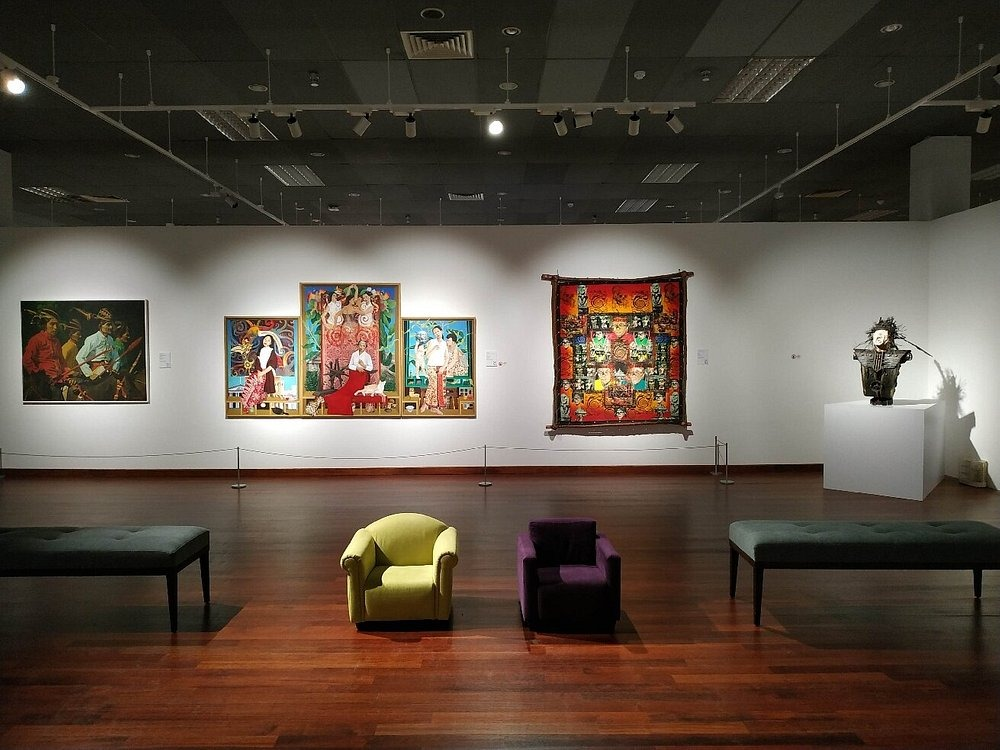
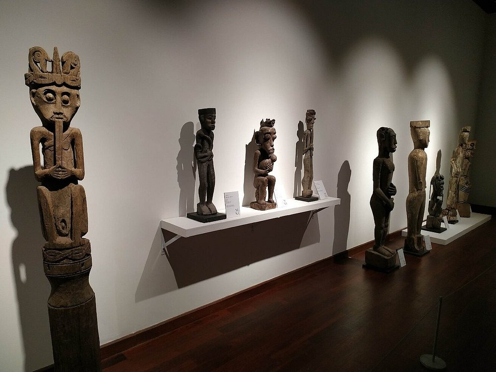
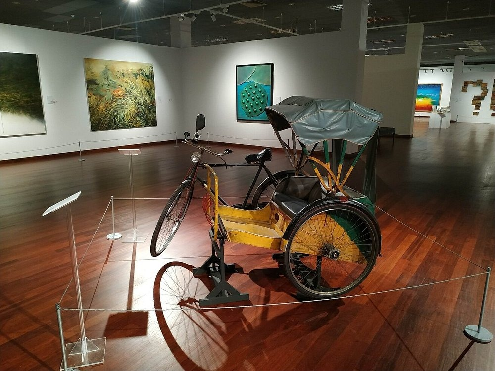
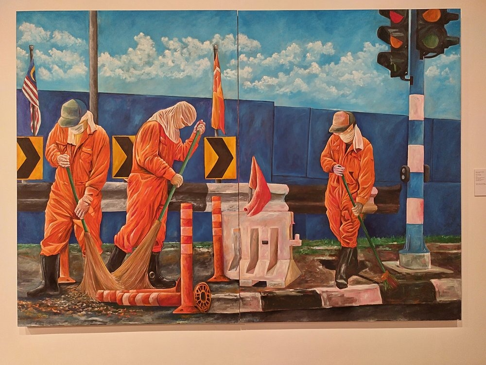
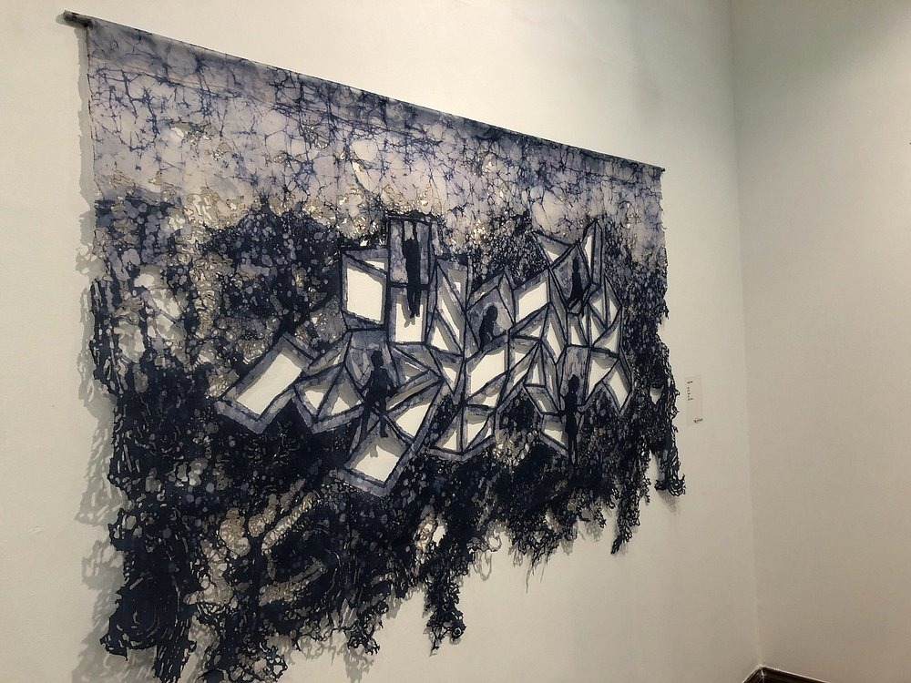
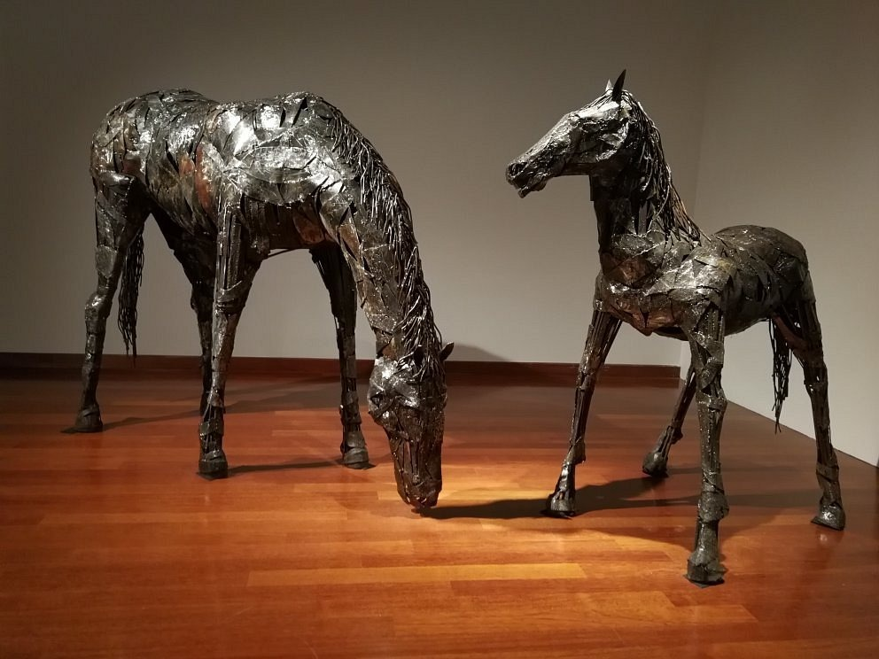
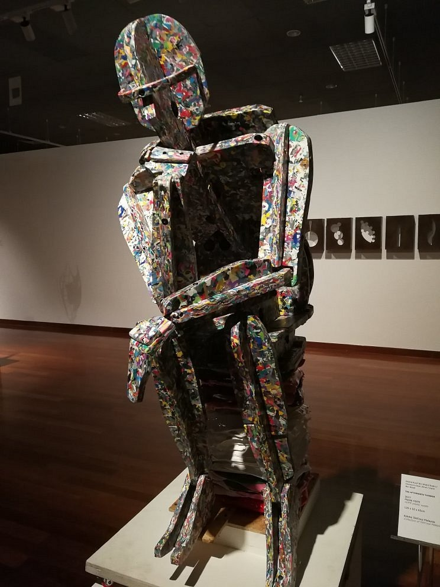
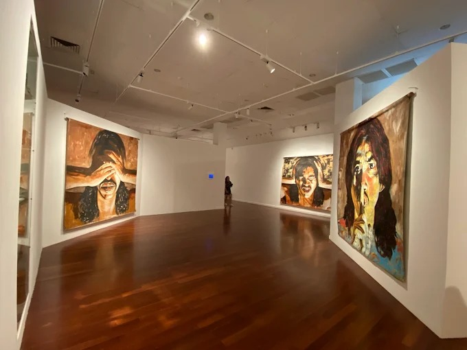
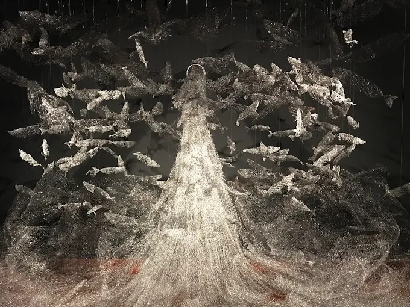
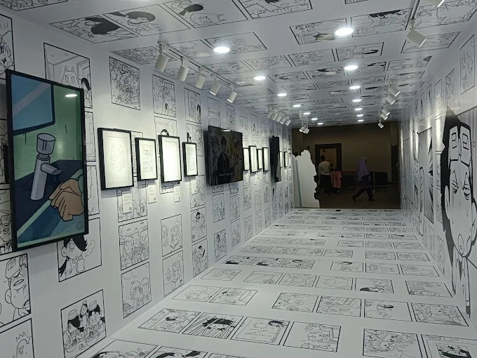
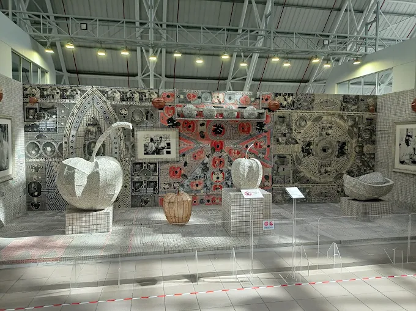
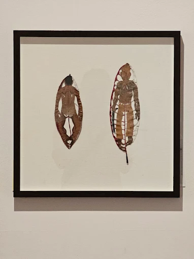
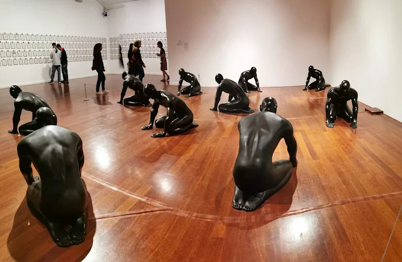
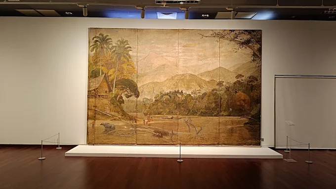
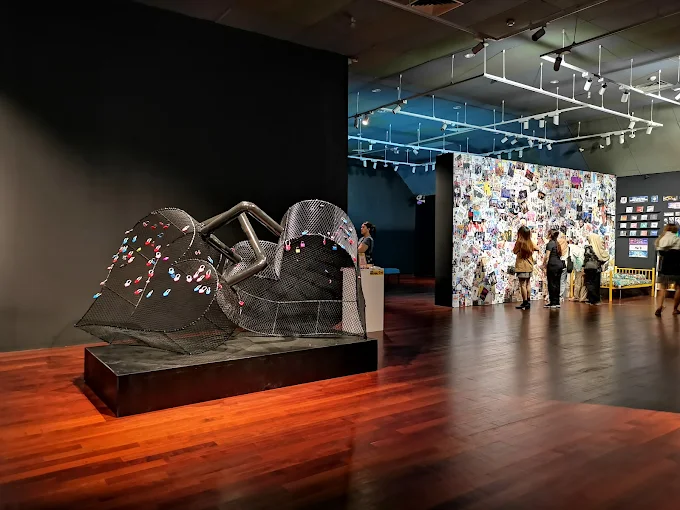
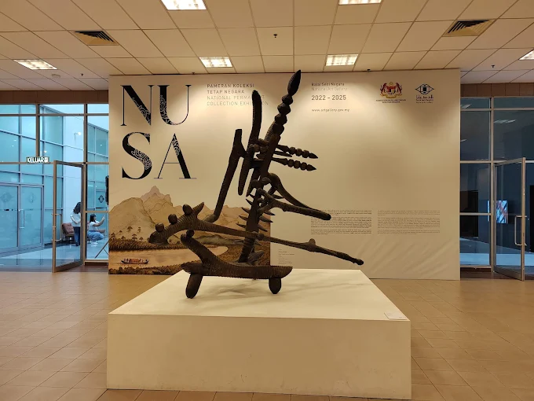
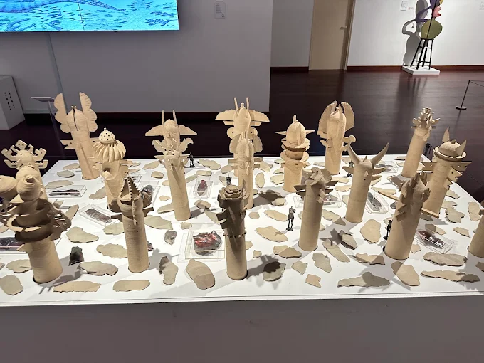
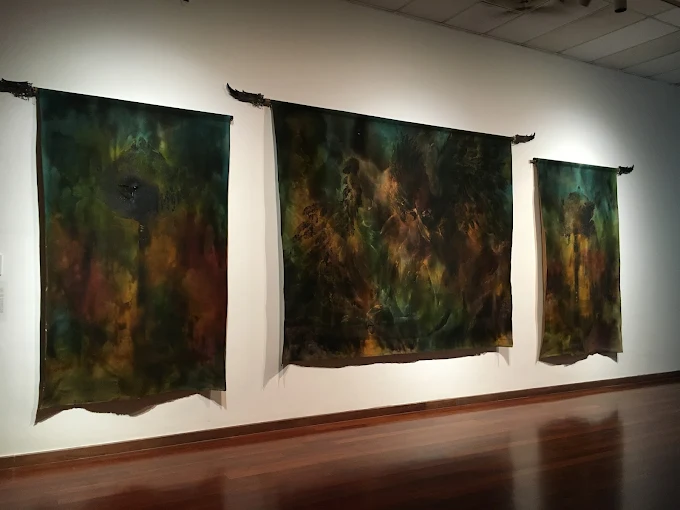
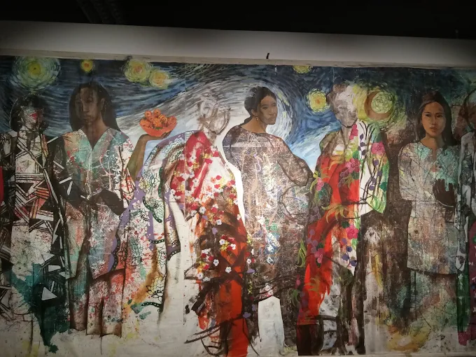